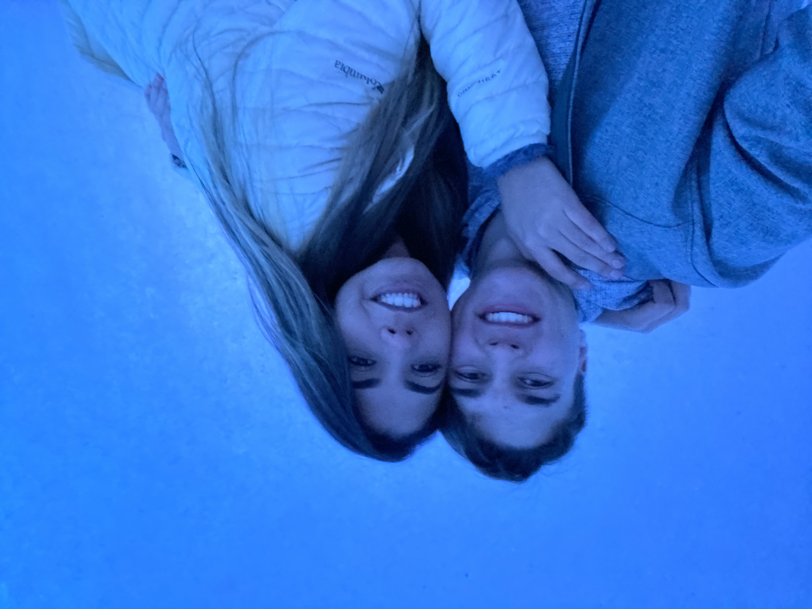
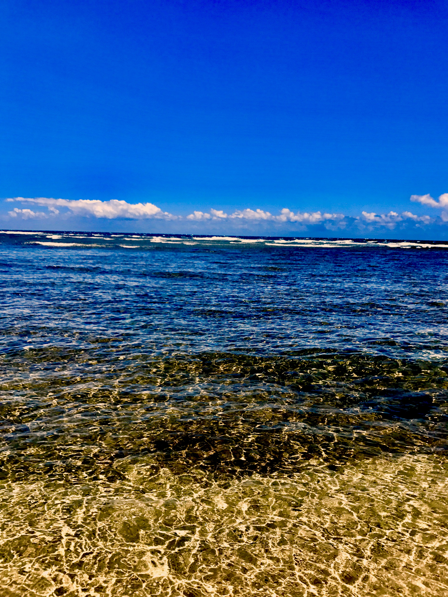
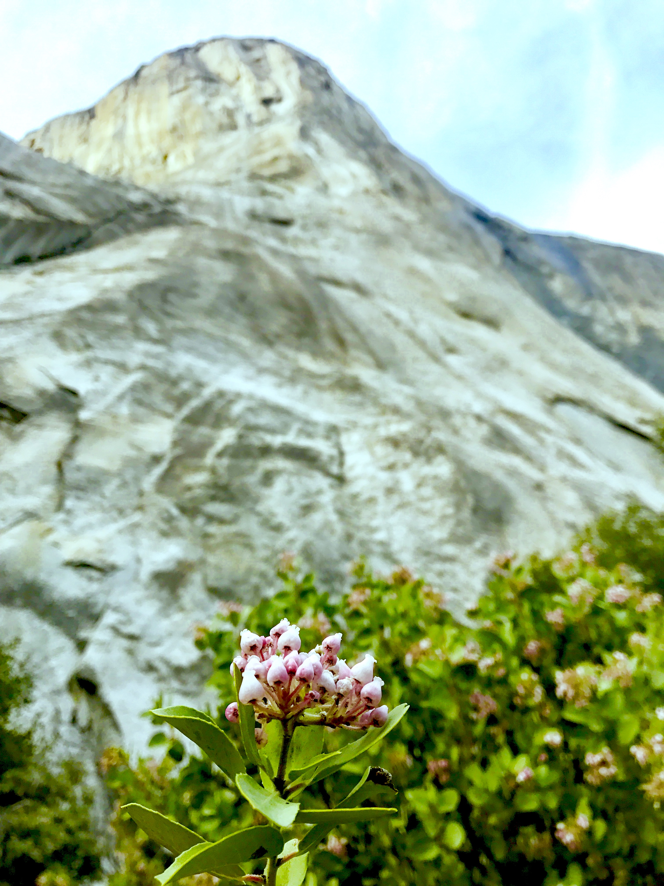
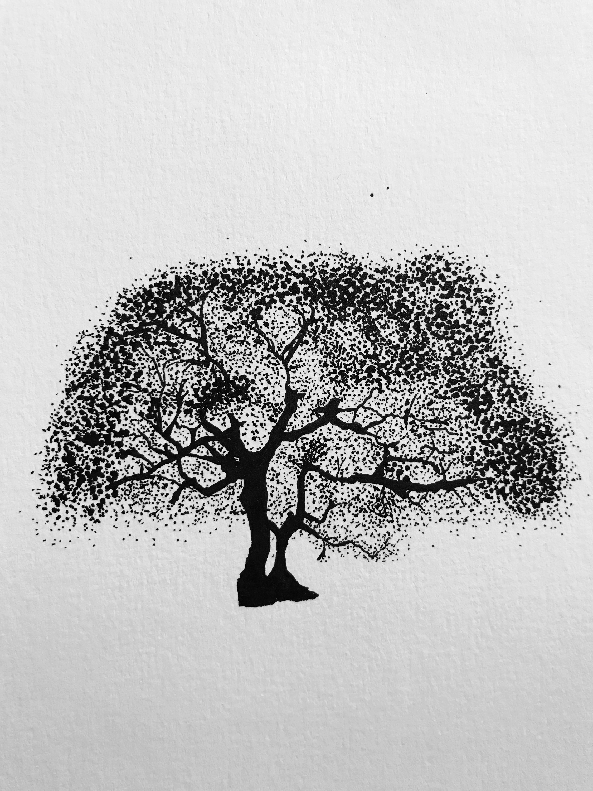

you can't program all the time
I love rock climbing. I love to go out and challenge myself and my abilities in the beautiful mountains that we have all around us. climing has been a hobby for several years now and I pride myself in having climbed in yosemite, zions and other national parks!
I love to go on dates with my fiancé she is amazing. We enjoy going on fun excersions. She is from brazil so we have the added advantage that everything here the snow and the mountains and everything else is all new to her and it just makes our dates that much better.
I love to paint and draw. I wouldn't really consider myself an artist, but I love to draw and paint when I have some spare time. It really helps me feel good and stay relaxed about life. If I get stuck on something in my programs it is not to uncommon to find me painting while I ponder a solution for the bug in my code.
I love to go boating. I make biannual visits to lake powell which is my person favorite place to go boating. I to surf behind the boat as well as wakeboarding, waterskiing, wakeskate and anything else you can think of
I love to go to the beach, I enjoy surfing. I recently learned to windsurf as well that is extremly fun and I love the feeling of floating across the water and watching the sunset over the waves. The ocean is one of the most amaing places on the planet.
Another hobby I have is my church, I love to participate in my local church and I love to serve and reach out to others. I was a missionary for my church for two years in brazil. I love the great feelings that come when we help others.